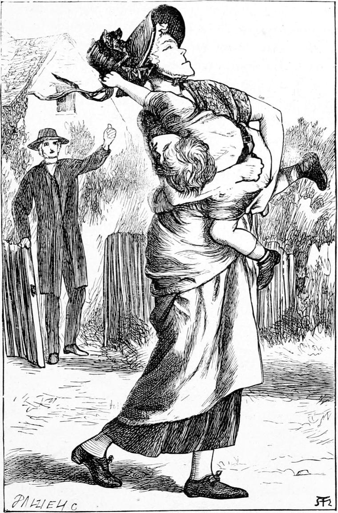

After this talk with my father I fell into a sleep of perfect contentment, and never thought of what might be on the morrow till the morrow came. Then I grew aware of the danger I was in of being carried off once more to school. Indeed, except my father interfered, the thing was almost inevitable. I thought he would protect me, but I had no assurance. He was gone again, for, as I have mentioned already, he was given to going out early in the mornings. It was not early now, however; I had slept much longer than usual. I got up at once, intending to find him; but, to my horror, before I was half dressed, my enemy, Mrs. Mitchell, came into the room, looking triumphant and revengeful.
“I’m glad to see you’re getting up,” she said; “it’s nearly school-time.”
The tone, and the emphasis she laid on the word school, would have sufficed to reveal the state of her mind, even if her eyes had not been fierce with suppressed indignation.
“I haven’t had my porridge,” I said.
“Your porridge is waiting you—as cold as a stone,” she answered. “If boys will lie in bed so late, what can they expect?”
“Nothing from you,” I muttered, with more hardihood than I had yet shown her.
“What’s that you’re saying?” she asked angrily.
I was silent.
“Make haste,” she went on, “and don’t keep me waiting all day.”
“You needn’t wait, Mrs. Mitchell. I am dressing as fast as I can. Is papa in his study yet?”
“No. And you needn’t think to see him. He’s angry enough with you, I’ll warrant”
She little knew what had passed between my father and me already. She could not imagine what a talk we had had.
“You needn’t think to run away as you did yesterday. I know all about it Mrs. Shand told me all about it I shouldn’t wonder if your papa’s gone to see her now, and tell her how sorry he is you were so naughty.”
“I’m not going, to school.”
“We’ll see about that”
“I tell you I won’t go.”
“And I tell you we’ll see about it”
“I won’t go till I’ve seen papa. If he says I’m to go, I will of course; but I won’t go for you.”
“You will, and you won’t!” she repeated, standing staring at me, as I leisurely, but with hands trembling partly with fear, partly with rage, was fastening my nether garments to my waistcoat. “That’s all very fine, but I know something a good deal finer. Now wash your face.”
“I won’t, so long as you stand there,” I said, and sat down on the floor. She advanced towards me.
“If you touch me, I’ll scream,” I cried.
She stopped, thought for a moment, and bounced out of the room. But I heard her turn the key of the door.
I proceeded with my dressing as fast as I could then; and the moment I was ready, opened the window, which was only a few feet from the ground, scrambled out, and dropped. I hurt myself a little, but not much, and fled for the harbour of Kirsty’s arms. But as I turned the corner of the house I ran right into Mrs. Mitchell’s, who received me with no soft embrace. In fact I was rather severely scratched with a. pin in the bosom of her dress.
“There! that serves you right,” she cried. “That’s a judgment on you for trying to run away again. After all the trouble you gave us yesterday too! You are a bad boy.”
“Why am I a bad boy?” I retorted.
“It’s bad not to do what you are told.”
“I will do what my papa tells me.”
“Your papa! There are more people than your papa in the world.”
“I’m to be a bad boy if I don’t do what anybody like you chooses to tell me, am I?”
“None of your impudence!”
This was accompanied by a box on the ear. She was now dragging me into the kitchen. There she set my porridge before me, which I declined to eat.
“Well, if you won’t eat good food, you shall go to school without it.”
“I tell you I won’t go to school.”
She caught me up in her arms. She was very strong, and I could not prevent her carrying me out of the house. If I had been the bad boy she said I was, I could by biting and scratching have soon compelled her to set me down; but I felt that I must not do that, for then I should be ashamed before my father. I therefore yielded for the time, and fell to planning. Nor was I long in coming to a resolution. I drew the pin that had scratched me from her dress. I believed she would not carry me very far; but if she did not set me down soon, I resolved to make her glad to do so. Further I resolved, that when we came to the foot-bridge, which had but one rail to it, I would run the pin into her and make her let me go, when I would instantly throw myself into the river, for I would run the risk of being drowned rather than go to that school. Were all my griefs of yesterday, overcome and on the point of being forgotten, to be frustrated in this fashion? My whole blood was boiling. I was convinced my father did not want me to go. He could not have been so kind to me during the night, and then send me to such a place in the morning. But happily for the general peace, things did not arrive at such a desperate pass. Before we were out of the gate, my heart leaped with joy, for I heard my father calling, “Mrs. Mitchell! Mrs. Mitchell!” I looked round, and seeing him coming after us with his long slow strides, I fell to struggling so violently in the strength of hope that she was glad to set me down. I broke from her, ran to my father, and burst out crying.

“Papa! papa!” I sobbed, “don’t send me to that horrid school. I can learn to read without that old woman to teach me.”
“Really, Mrs. Mitchell,” said my father, taking me by the hand and leading me towards her, where she stood visibly flaming with rage and annoyance, “really, Mrs. Mitchell, you are taking too much upon you! I never said the child was to go to that woman’s school. In fact I don’t approve of what I hear of her, and I have thought of consulting some of my brethren in the presbytery on the matter before taking steps myself. I won’t have the young people in my parish oppressed in such a fashion. Terrified with dogs too! It is shameful.”
“She’s a very decent woman, Mistress Shand,” said the housekeeper.
“I don’t dispute her decency, Mrs. Mitchell; but I doubt very much whether she is fit to have the charge of children; and as she is a friend of yours, you will be doing her a kindness to give her a hint to that effect. It may save the necessity for my taking further and more unpleasant steps.”
“Indeed, sir, by your leave, it would be hard lines to take the bread out of the mouth of a lone widow woman, and bring her upon the parish with a bad name to boot. She’s supported herself for years with her school, and been a trouble to nobody.”
“Except the lambs of the flock, Mrs. Mitchell.—I like you for standing up for your friend; but is a woman, because she is lone and a widow, to make a Moloch of herself, and have the children sacrificed to her in that way? It’s enough to make idiots of some of them. She had better see to it. You tell her that—from me, if you like. And don’t you meddle with school affairs. I’ll take my young men,” he added with a smile, “to school when I see fit.”
“I’m sure, sir,” said Mrs. Mitchell, putting her blue striped apron to her eyes, “I asked your opinion before I took him.”
“I believe I did say something about its being time he were able to read, but I recollect nothing more.—You must have misunderstood me,” he added, willing to ease her descent to the valley of her humiliation.
She walked away without another word, sniffing the air as she went, and carrying her hands folded under her apron. From that hour I believe she hated me.
My father looked after her with a smile, and then looked down on me, saying—
“She’s short in the temper, poor woman! and we mustn’t provoke her.”
I was too well satisfied to urge my victory by further complaint. I could afford to let well alone, for I had been delivered as from the fiery furnace, and the earth and the sky were laughing around me. Oh! what a sunshine filled the world! How glad the larks, which are the praisers amongst the birds, were that blessed morning! The demon of oppression had hidden her head ashamed, and fled to her den!